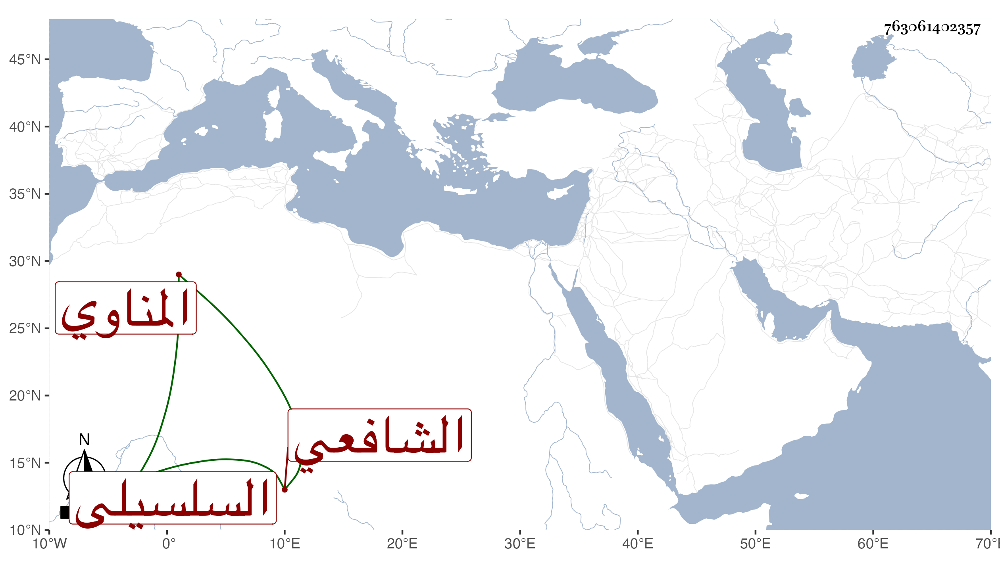

0902Sakhawi.DawLamic.ITO20230111-ara1.EIS1600.763061402357
Biography ID: 763061402357
373
محمد بن علي بن أحمد بن إبراهيم السلسيلي المناوي الشافعي ويعرف بابن الهليس بكسر الهاء واللام وآخره مهملة لقب لجده . ولد سنة اثنتي عشرة وثمانمائة تقريبا بمنية بنى سلسيل وحفظ بها القرآن وصلى به والعمدة وعرضها على جماعة ونظم اليسير مما يوجد فيه المقيول ، كتب عنه ابن فهد والبقاعي في المنية سنة ثمان وثلاثين قوله :
| أيها المذنبون مثلي أجيبوا | داعي الله أسرعوا وأنيبوا |
| وتنحوا عن كل فعل قبيح | وافعلوا الخير فهو فعل حسيب |
| وإلى الله فارجعوا من قريب | فنهار الحساب منكم قريب |
في أبيات
